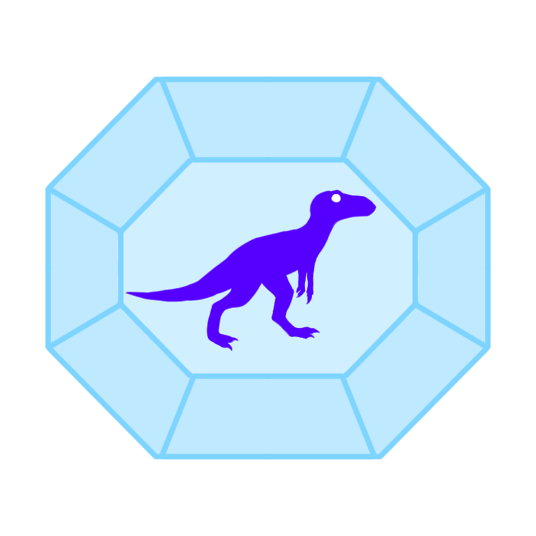

Prehistoric Yakutia
Back

Horinsky district expeditions with students
Since 2002, Pyotr Nikolaevich has been conducting expeditions together with schoolchildren of the Suntar district. The dinosaurs are located 71 km from the village of Horo. The road passes through 100 kilometres of the taiga.